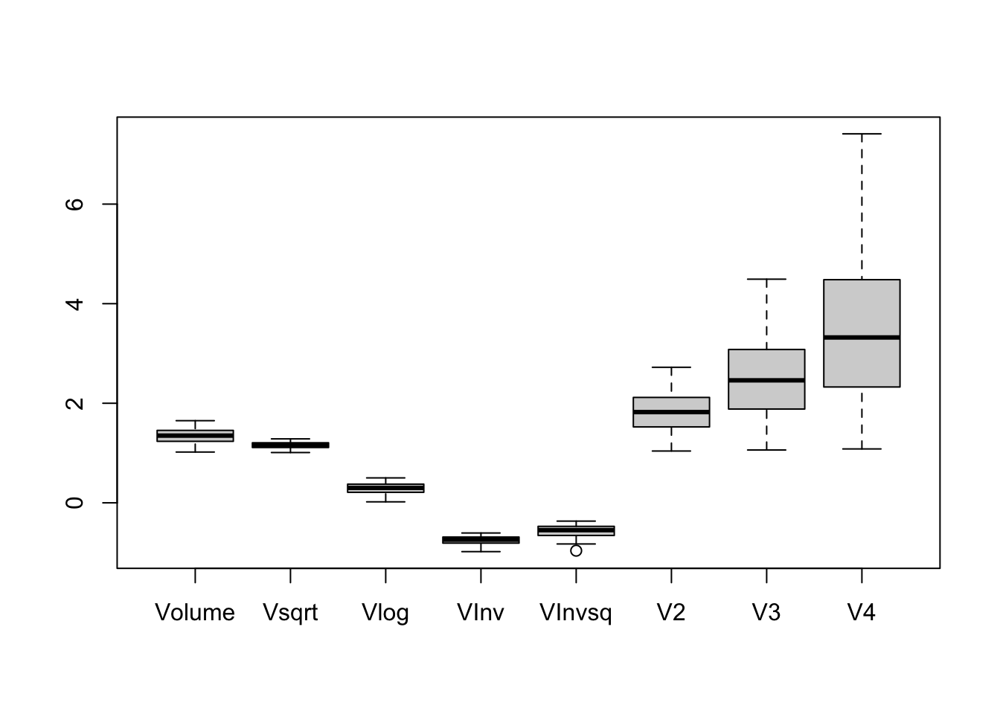
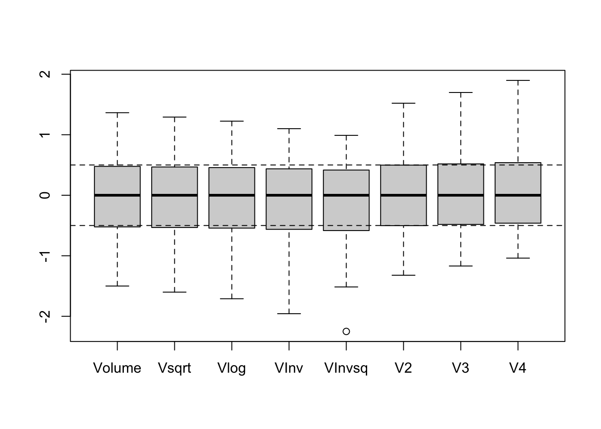

5 The Shape or Distribution of a Batch (Ch. 5)
First we’ll need some data on volumes of Bell-Shaped Storage Pits at the Buena Vista and Buenos Aires Sites.
BVPits <- data.frame(Volume = c(1.23, 1.48, 1.55, 1.38, 1.10, 1.02, 1.29, 1.32, 1.35,
1.65, 1.39, 1.40, 1.12, 1.46, 1.24, 1.34, 1.21, 1.45, 1.51))
aplpack::stem.leaf(BVPits$Volume, unit = .01)## 1 | 2: represents 0.12
## leaf unit: 0.01
## n: 19
## 1 10 | 2
## 3 11 | 02
## 7 12 | 1349
## (5) 13 | 24589
## 7 14 | 0568
## 3 15 | 15
## 1 16 | 5BAPits <- data.frame(Volume = c(1.22, 1.64, 1.16, 1.07, 1.50, 1.84, 1.37, 1.15, 1.29,
1.32, 2.03, 1.17, 1.04, 1.43, 1.11, 1.40, 1.26))
aplpack::stem.leaf(BAPits$Volume, unit = .01, trim.outliers = F)## 1 | 2: represents 0.12
## leaf unit: 0.01
## n: 17
## 2 10 | 47
## 6 11 | 1567
## (3) 12 | 269
## 8 13 | 27
## 6 14 | 03
## 4 15 | 0
## 3 16 | 4
## 17 |
## 2 18 | 4
## 19 |
## 1 20 | 3Using those stem-and-leaf plots, compare the symmetry of storage pit volumes from the Buena Vista Site with the asymmetry of the pit volumes from the Buenos Aires Site.
Drennan experiments with seven different transformations. We’ll produce those all at once, using transform().
#transform the pit volume data in various ways
BVPits <- transform(BVPits, Vsqrt = sqrt(Volume), Vlog = log(Volume), VInv = -1/Volume,
VInvsq = -1/Volume^2, V2 = Volume^2, V3 = Volume^3, V4 = Volume^4)
BVPits #examine the result## Volume Vsqrt Vlog VInv VInvsq V2 V3 V4
## 1 1.23 1.109054 0.20701417 -0.8130081 -0.6609822 1.5129 1.860867 2.288866
## 2 1.48 1.216553 0.39204209 -0.6756757 -0.4565376 2.1904 3.241792 4.797852
## 3 1.55 1.244990 0.43825493 -0.6451613 -0.4162331 2.4025 3.723875 5.772006
## 4 1.38 1.174734 0.32208350 -0.7246377 -0.5250998 1.9044 2.628072 3.626739
## 5 1.10 1.048809 0.09531018 -0.9090909 -0.8264463 1.2100 1.331000 1.464100
## 6 1.02 1.009950 0.01980263 -0.9803922 -0.9611688 1.0404 1.061208 1.082432
## 7 1.29 1.135782 0.25464222 -0.7751938 -0.6009254 1.6641 2.146689 2.769229
## 8 1.32 1.148913 0.27763174 -0.7575758 -0.5739210 1.7424 2.299968 3.035958
## 9 1.35 1.161895 0.30010459 -0.7407407 -0.5486968 1.8225 2.460375 3.321506
## 10 1.65 1.284523 0.50077529 -0.6060606 -0.3673095 2.7225 4.492125 7.412006
## 11 1.39 1.178983 0.32930375 -0.7194245 -0.5175716 1.9321 2.685619 3.733010
## 12 1.40 1.183216 0.33647224 -0.7142857 -0.5102041 1.9600 2.744000 3.841600
## 13 1.12 1.058301 0.11332869 -0.8928571 -0.7971939 1.2544 1.404928 1.573519
## 14 1.46 1.208305 0.37843644 -0.6849315 -0.4691312 2.1316 3.112136 4.543719
## 15 1.24 1.113553 0.21511138 -0.8064516 -0.6503642 1.5376 1.906624 2.364214
## 16 1.34 1.157584 0.29266961 -0.7462687 -0.5569169 1.7956 2.406104 3.224179
## 17 1.21 1.100000 0.19062036 -0.8264463 -0.6830135 1.4641 1.771561 2.143589
## 18 1.45 1.204159 0.37156356 -0.6896552 -0.4756243 2.1025 3.048625 4.420506
## 19 1.51 1.228821 0.41210965 -0.6622517 -0.4385773 2.2801 3.442951 5.198856You’ll note from Fig. 5.1 that Drennan also examines the results by producing stem-and-leaf plots and boxplots for each of the transformed variables. We’ll use the powerful-but-confusing apply() function to do this, mostly just so that you can become aware of its existence (think about other ways you might do this). As ?apply will tell you if you can decipher it, apply() takes an input array (a type of data structure; conveniently a data frame is similar to a two-dimensional array) and applies a function to one of its margins. In the case below, we specify that we’d like the stem.leaf() function - with some arguments that we include (e.g., trim.outliers = F) - applied to each column (MARGIN = 2) in BVPits.
#Use apply() to have stem.leaf applied to each column
apply(BVPits, 2, aplpack::stem.leaf, trim.outliers = F,
depths = F, style = "bare")## 1 | 2: represents 0.12
## leaf unit: 0.01
## n: 19
## 10 | 2
## 11 | 02
## 12 | 1349
## 13 | 24589
## 14 | 0568
## 15 | 15
## 16 | 5
## 1 | 2: represents 0.12
## leaf unit: 0.01
## n: 19
## 10 | 04
## 10 | 5
## 11 | 00134
## 11 | 56778
## 12 | 00124
## 12 | 8
## 1 | 2: represents 0.12
## leaf unit: 0.01
## n: 19
## 0 | 1
## 0 | 9
## 1 | 1
## 1 | 9
## 2 | 01
## 2 | 579
## 3 | 0223
## 3 | 779
## 4 | 13
## 4 |
## 5 | 0
## 1 | 2: represents 0.12
## leaf unit: 0.01
## n: 19
## -9 | 8
## -9 | 0
## -8 | 9
## -8 | 210
## -7 | 75
## -7 | 44211
## -6 | 8876
## -6 | 40
## 1 | 2: represents 0.12
## leaf unit: 0.01
## n: 19
## -9 | 6
## -9 |
## -8 |
## -8 | 2
## -7 | 9
## -7 |
## -6 | 865
## -6 | 0
## -5 | 75
## -5 | 4211
## -4 | 765
## -4 | 31
## -3 | 6
## 1 | 2: represents 1.2
## leaf unit: 0.1
## n: 19
## 1 | 0
## 1 | 22
## 1 | 455
## 1 | 677
## 1 | 8999
## 2 | 111
## 2 | 2
## 2 | 4
## 2 | 7
## 1 | 2: represents 1.2
## leaf unit: 0.1
## n: 19
## 1 | 034
## 1 | 789
## 2 | 1244
## 2 | 667
## 3 | 0124
## 3 | 7
## 4 | 4
## 1 | 2: represents 1.2
## leaf unit: 0.1
## n: 19
## 1 | 045
## 2 | 1237
## 3 | 023678
## 4 | 457
## 5 | 17
## 6 |
## 7 | 4## $Volume
## $Volume$info
## [1] "1 | 2: represents 0.12" " leaf unit: 0.01" " n: 19"
##
## $Volume$display
## [1] " 10 | 2" " 11 | 02" " 12 | 1349" " 13 | 24589"
## [5] " 14 | 0568" " 15 | 15" " 16 | 5"
##
## $Volume$depths
## [1] ""
##
## $Volume$stem
## [1] " 10" " 11" " 12" " 13" " 14" " 15" " 16" " 17"
##
## $Volume$leaves
## [1] "| 2" "| 02" "| 1349" "| 24589" "| 0568" "| 15" "| 5"
## [8] "| "
##
##
## $Vsqrt
## $Vsqrt$info
## [1] "1 | 2: represents 0.12" " leaf unit: 0.01" " n: 19"
##
## $Vsqrt$display
## [1] " 10 | 04" " 10 | 5" " 11 | 00134" " 11 | 56778"
## [5] " 12 | 00124" " 12 | 8"
##
## $Vsqrt$depths
## [1] ""
##
## $Vsqrt$stem
## [1] " 10" " 10" " 11" " 11" " 12" " 12" " 13"
##
## $Vsqrt$leaves
## [1] "| 04" "| 5" "| 00134" "| 56778" "| 00124" "| 8" "| "
##
##
## $Vlog
## $Vlog$info
## [1] "1 | 2: represents 0.12" " leaf unit: 0.01" " n: 19"
##
## $Vlog$display
## [1] " 0 | 1" " 0 | 9" " 1 | 1" " 1 | 9" " 2 | 01"
## [6] " 2 | 579" " 3 | 0223" " 3 | 779" " 4 | 13" " 4 | "
## [11] " 5 | 0"
##
## $Vlog$depths
## [1] ""
##
## $Vlog$stem
## [1] " 0" " 0" " 1" " 1" " 2" " 2" " 3" " 3" " 4" " 4" " 5" " 5"
## [13] " 6"
##
## $Vlog$leaves
## [1] "| 1" "| 9" "| 1" "| 9" "| 01" "| 579" "| 0223" "| 779"
## [9] "| 13" "| " "| 0" "| " "| "
##
##
## $VInv
## $VInv$info
## [1] "1 | 2: represents 0.12" " leaf unit: 0.01" " n: 19"
##
## $VInv$display
## [1] " -9 | 8" " -9 | 0" " -8 | 9" " -8 | 210"
## [5] " -7 | 75" " -7 | 44211" " -6 | 8876" " -6 | 40"
##
## $VInv$depths
## [1] ""
##
## $VInv$stem
## [1] " -10" " -9" " -9" " -8" " -8" " -7" " -7" " -6" " -6"
##
## $VInv$leaves
## [1] "| " "| 8" "| 0" "| 9" "| 210" "| 75" "| 44211"
## [8] "| 8876" "| 40"
##
##
## $VInvsq
## $VInvsq$info
## [1] "1 | 2: represents 0.12" " leaf unit: 0.01" " n: 19"
##
## $VInvsq$display
## [1] " -9 | 6" " -9 | " " -8 | " " -8 | 2"
## [5] " -7 | 9" " -7 | " " -6 | 865" " -6 | 0"
## [9] " -5 | 75" " -5 | 4211" " -4 | 765" " -4 | 31"
## [13] " -3 | 6"
##
## $VInvsq$depths
## [1] ""
##
## $VInvsq$stem
## [1] " -10" " -9" " -9" " -8" " -8" " -7" " -7" " -6" " -6"
## [10] " -5" " -5" " -4" " -4" " -3" " -3"
##
## $VInvsq$leaves
## [1] "| " "| 6" "| " "| " "| 2" "| 9" "| " "| 865"
## [9] "| 0" "| 75" "| 4211" "| 765" "| 31" "| 6" "| "
##
##
## $V2
## $V2$info
## [1] "1 | 2: represents 1.2" " leaf unit: 0.1" " n: 19"
##
## $V2$display
## [1] " 1 | 0" " 1 | 22" " 1 | 455" " 1 | 677" " 1 | 8999"
## [6] " 2 | 111" " 2 | 2" " 2 | 4" " 2 | 7"
##
## $V2$depths
## [1] ""
##
## $V2$stem
## [1] " 1" " 1" " 1" " 1" " 1" " 2" " 2" " 2" " 2" " 2" " 3"
##
## $V2$leaves
## [1] "| 0" "| 22" "| 455" "| 677" "| 8999" "| 111" "| 2" "| 4"
## [9] "| 7" "| " "| "
##
##
## $V3
## $V3$info
## [1] "1 | 2: represents 1.2" " leaf unit: 0.1" " n: 19"
##
## $V3$display
## [1] " 1 | 034" " 1 | 789" " 2 | 1244" " 2 | 667" " 3 | 0124"
## [6] " 3 | 7" " 4 | 4"
##
## $V3$depths
## [1] ""
##
## $V3$stem
## [1] " 1" " 1" " 2" " 2" " 3" " 3" " 4" " 4" " 5"
##
## $V3$leaves
## [1] "| 034" "| 789" "| 1244" "| 667" "| 0124" "| 7" "| 4" "| "
## [9] "| "
##
##
## $V4
## $V4$info
## [1] "1 | 2: represents 1.2" " leaf unit: 0.1" " n: 19"
##
## $V4$display
## [1] " 1 | 045" " 2 | 1237" " 3 | 023678" " 4 | 457"
## [5] " 5 | 17" " 6 | " " 7 | 4"
##
## $V4$depths
## [1] ""
##
## $V4$stem
## [1] " 1" " 2" " 3" " 4" " 5" " 6" " 7" " 8"
##
## $V4$leaves
## [1] "| 045" "| 1237" "| 023678" "| 457" "| 17" "| " "| 4"
## [8] "| "We can also make a boxplot of these transformed variables.

This doesn’t look like Drennan’s boxplot, because he standardized the data before plotting into order to make the shapes of the distributions easily comparable.
#standardize using median and midspread, then plot again
BVStandard <- apply(BVPits, 2, function(x) scale(x, center = median(x), scale = IQR(x)))
#This uses apply() as above and scale() as you saw in Ch.4
BVStandard## Volume Vsqrt Vlog VInv VInvsq V2
## [1,] -0.54545455 -0.5566422 -0.5678419 -0.59024368 -0.61259210 -0.52314971
## [2,] 0.59090909 0.5757739 0.5608092 0.53141872 0.50279045 0.62166272
## [3,] 0.90909091 0.8753401 0.8427027 0.78064487 0.72267871 0.98006083
## [4,] 0.13636364 0.1352489 0.1340690 0.13152169 0.12873789 0.13839135
## [5,] -1.13636364 -1.1912738 -1.2492246 -1.37499949 -1.51530964 -1.03497803
## [6,] -1.50000000 -1.6006161 -1.7098128 -1.95735221 -2.25031132 -1.32156134
## [7,] -0.27272727 -0.2750835 -0.2773158 -0.28139524 -0.28494197 -0.26765799
## [8,] -0.13636364 -0.1367602 -0.1370821 -0.13749995 -0.13761485 -0.13534978
## [9,] 0.00000000 0.0000000 0.0000000 0.00000000 0.00000000 0.00000000
## [10,] 1.36363636 1.2917924 1.2240704 1.09999959 0.98958997 1.52078405
## [11,] 0.18181818 0.1800045 0.1781118 0.17410065 0.16980936 0.18519770
## [12,] 0.22727273 0.2245995 0.2218388 0.21607135 0.21000387 0.23234201
## [13,] -1.04545455 -1.0912865 -1.1393136 -1.24241025 -1.35571814 -0.95995269
## [14,] 0.50000000 0.4888886 0.4778161 0.45582175 0.43408418 0.52230483
## [15,] -0.50000000 -0.5092464 -0.5184498 -0.53669335 -0.55466370 -0.48141264
## [16,] -0.04545455 -0.0454163 -0.0453526 -0.04514924 -0.04484596 -0.04545455
## [17,] -0.63636364 -0.6520153 -0.6678424 -0.69999974 -0.73278728 -0.60561000
## [18,] 0.45454545 0.4452228 0.4358922 0.41724122 0.39866003 0.47313282
## [19,] 0.72727273 0.7050083 0.6832192 0.64105936 0.60077629 0.77323420
## V3 V4
## [1,] -0.50099487 -0.4790560
## [2,] 0.65301199 0.6848974
## [3,] 1.05587752 1.1368211
## [4,] 0.14014048 0.1416019
## [5,] -0.94379238 -0.8616766
## [6,] -1.16925128 -1.0387376
## [7,] -0.26214008 -0.2562092
## [8,] -0.13404839 -0.1324699
## [9,] 0.00000000 0.0000000
## [10,] 1.69788616 1.8976399
## [11,] 0.18823116 0.1909025
## [12,] 0.23701881 0.2412787
## [13,] -0.88201248 -0.8109154
## [14,] 0.54466149 0.5670013
## [15,] -0.46275681 -0.4441013
## [16,] -0.04535301 -0.0451513
## [17,] -0.57562582 -0.5464523
## [18,] 0.49158682 0.5098414
## [19,] 0.82111588 0.8709287boxplot(BVStandard)
abline(h = c(-.5, .5), lty = 2) #add horizontal lines to the plot using abline()
You can repeat this with the second dataset (using fewer transformations), as Drennan does to build Fig. 5.2.
BAPits <- transform(BAPits, Vsqrt = sqrt(Volume), Vlog = log(Volume),
VInv = -1/Volume, VInvsq = -1/Volume^2)
boxplot(BAPits)
BAStandard <- apply(BAPits, 2, function(x) scale(x, center = median(x), scale = IQR(x)))
boxplot(BAStandard)
abline(h=c(-.5, .5), lty = 2)
If you haven’t already noticed in reading ?boxplot, it’s possible to make these plots much prettier. In any R plot just about every parameter is manipulable (color, line weight, fill, background, font, etc).
#So, for instance, if you wanted to make a considerably uglier boxplot...
boxplot(BAStandard, col = "salmon", border = "limegreen", outpch = 23, outbg = "salmon",
main = "Ow, my eyes", col.main = "limegreen", col.axis = "salmon",
xlab = "Transformations", col.lab = "salmon", cex.lab = 1.2) 
Have a look and figure out which of the parameters added here have done what to the plot - this is knowledge that will come in very handy later.
When - not if! - you want to explore boxplots and histograms of archaeological data a bit further, you can find a bit more here.